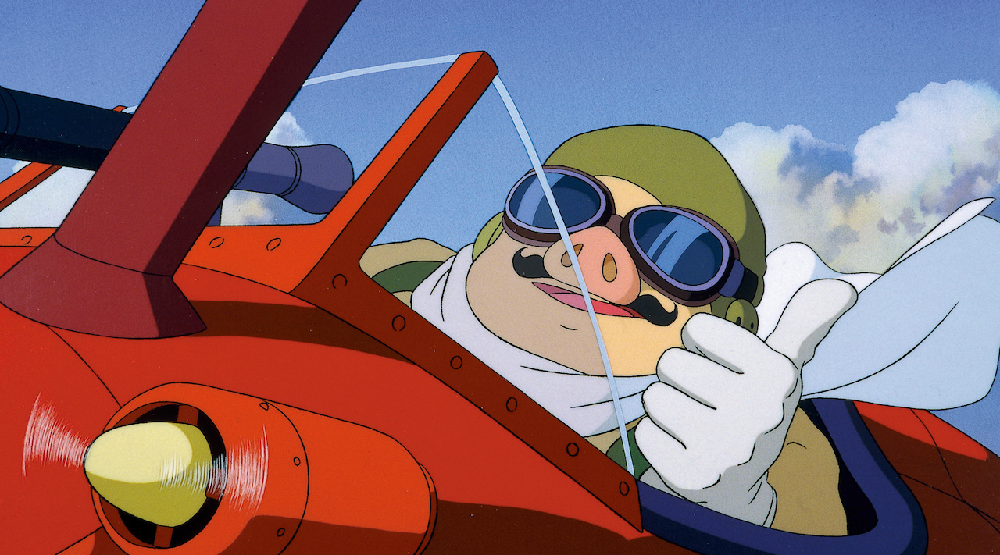

Yet Studio Ghibli was successful in breaking through into the global sphere, landing 6 spots out of 10 in the highest grossing anime films, and paving the way for the anime genre to reach internationally.
As they reached worldwide box office success, Studio Ghibli also received many awards. Namely, Miyazaki's Spirited Away won him an Oscar for best animated feature in 2002, further launching Studio Ghibli into the spotlight. Moreover, Miyazaki began inspiring directors worldwide. John Lasseter, who was working on the English dub of Spirited Away, was able to connect Studio Ghibli's US distribution rights to Disney.
Studio Ghibli has reached far reaching global impact, paving the way for anime to reach more recognition internationally and impacting directors worldwide. Studio Ghibli was able to do this by a combination of marketing, telling unique and refreshing stories with unconventional themes, but most importantly, having few but great quality movies.
"No matter how good the animation is, when we have too much , it is no longer of good quality."
- Miyazaki
Miyazaki has been noted to inspire directors from all around the glob including: Guillermo del Toro, James Cameron, Steven Spielberg, Wes Anderson, and many more.
-
Studio Ghibli is founded by Hayao Miyazaki and Isao Takahata
-
Castle in the Sky is released. A story about a boy and a girl attempting to keep a crystal away from a military organisation.
-

Grave of the Fireflies is released. A tale Seita and his younger sister whose home is bombed during WWII.
-
My Neighbor Totoro is released. While exploring the neighbouring forest, Mei stumbles upon a magical world of cryptids, creatures and monsters
-
Kiki's Delivery Service is released. Kiki is a young witch in training who moves to a new town and freelances at a bakery
-
Only Yesterday is released. A realistic drama of Taeko Okajima’s life: as a school girl and her in the present day.
Porco Rosso is released. Transformed into a pig following the events of WWI, Porco Rosso lives out his days as a freelance bounty hunter,
Ocean Waves is released. It is about a love triangle between two good friends and a new girl.
Pom Poko is released. The raccoon community must learn to defend themselves using transformation
Princess Mononoke becomes the first ever animated film to win the Japan Academy Prize for Picture of the Year.
Whisper of the Heart is released. When Shizuku finds that every library book has already been checked by ‘Seiji’, she sets out to find him

Princess Mononoke is released. Prince Ashitaka protects his rural village from threats of the forest
January 21, 1998 Yoshifumi Kondo, Miyazaki's successor, unexpectedly dies.September 1988 Studio Ghibli makes its first appearance in US Theaters with "Kiki's Delivery Service"My Neighbors the Yamadas is released. The film follows the Yamada family as they struggle as a barely functional family.
Spirited Away is released. Chihiro is seperated from her parents after entering an abandoned village and is thrown into the spirit world.
Studio Ghibli Museum is opened
The Cat Returns is released. When high schooler Haru saves a cat from oncoming traffic, she is sucked into the secret world of cats.
Hayao Miyazaki wins an Oscar for best nominated feature for his film "Spirited Away". It is the first non-English language film to win this Oscar.Howl's Moving Castle is released. When Sophie is cursed and turns to a 90-year-old woman, she seeks out Howl and his castle
Tales from Earthsea is released. In the land of Earthsea, a mysterious force threatens to plunge humanity into destruction and chaos
Ponyo is released. The daughter of the underwater sea-wizard Fujimoto, escape onto the surface to be adopted into the family of Sōsuke
Arrietty is released. Arrietty is a miniature being known as a burrower, her family are maybe the last of their kind.
From Up on Poppy Hill is released. The film tells the story of Umi Matsuzaki, a high school girl living in a boarding house.
The Wind Rises is released. The film follows Jiro as he trains to be a prodigious aircraft designer
The Tale of Princess Kaguya is released. Based on a story from 10th century folklore, Princess Kaguya is found, the size of a bean, in a bamboo shoot.
When Marnie Was There is released. Anna finds a mysterious kindred spirit in Marnie, a girl who lives in an austere mansion
Hayao Miyazaki comes out of retirement to work on his upcoming unreleased movie.Founder and Director Isao Takahata dies at age 82.Studio Ghibli Theme Park is set to open.